01
Item Attribute Grouping
Every medication had 147 attributes defining item behavior at each location. We solved the findability problem by moving attributes based on usage data and grouping unused ones into contextual pharmacy tasks.
"Medication management systems enable hospitals to precisely control their inventory, set rules for stocking and dispensing, and optimize stock levels effectively."
I joined Omnicell as the sole designer on the cloud platform team, facing a steep learning curve in a highly regulated, clinically complex domain. The goal: transition medication management from a legacy on-premise product to a modern cloud platform, maintaining feature parity while meaningfully improving the experience.
I started by establishing a design system using Material components, patterns, and icons, then delivered wireframes to unblock immediate development needs. Alongside that I conducted user studies with existing customers, collaborated with the business intelligence team on feature prioritization, and worked to align design decisions with strategic business goals.
What worked: strong engineering, product, and UX partnership, and leadership that was genuinely receptive to data and research findings.
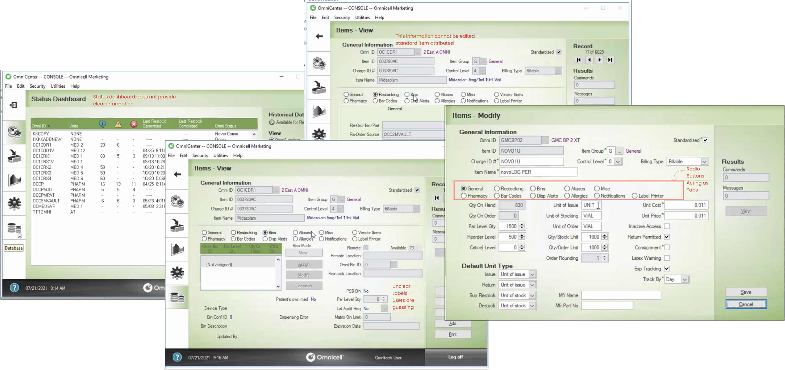
The legacy product before I joined. Engineering was waiting on a designer — so my first move was to reskin the existing journeys to unblock development, then layer in deeper efficiency improvements once we had a foundation to build on.
Medications and supplies were characterized by 147+ distinct attributes — each one dictating behavior and rules at specific locations across hospital systems. The challenge wasn't just visual: it was assessing necessity, collecting usage data, and organizing attributes in a way that was both clinically accurate and actually usable within a real delivery timeframe.
The solution: fixed page flows for readability, Material Design system for familiar component behavior, clear tabs and information hierarchy, and distinct view/edit modes. The result was measurably improved usability and findability — and crucially, it earned trust from both the engineering team and beta testers.
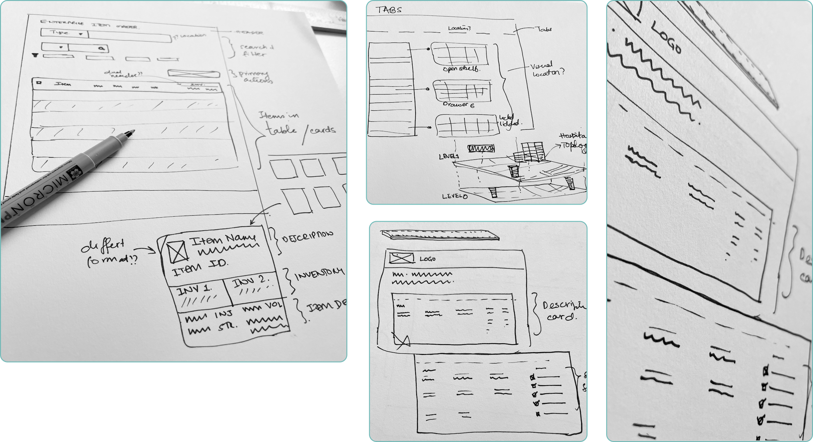
Early wireframe sketches exploring layout and interaction patterns.
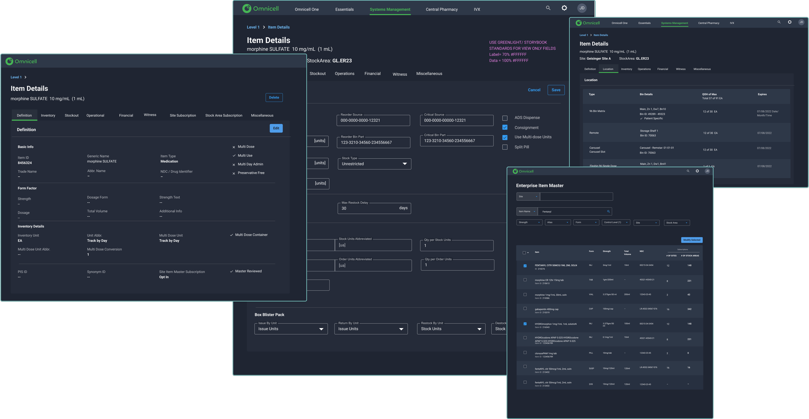
High-fidelity mockups of the medication management platform.
Virtual workshop with major health systems — building the prioritized feature roadmap.
While building templates, I ran parallel problem space research — meeting with SMEs and stakeholders to understand what UX improvements were really worth, even in a free product offering. I mapped daily engineering touchpoints, identified user roles across 5 large hospital systems, and ran online workshops with product managers.
From this I built a value model that connected better experience to two outcomes that mattered to the business: reduced pharmacy staff time, and improved patient safety. That model secured the resources and team needed to pursue a full redesign roadmap — and validated design as a strategic investment, not a cost center.
Collaborated with product managers through virtual workshops with major health systems to understand critical fixes and build a prioritized feature roadmap.
Every medication had 147 attributes defining item behavior at each location. We solved the findability problem by moving attributes based on usage data and grouping unused ones into contextual pharmacy tasks.
Health systems were navigating three separate lists to manage items due to location-based attribute variance. We identified the root cause and found a simple, elegant solution — integrating all three into one unified view.
After a reorganization I inherited the analytics platform alongside the core product. The team needed alignment across features, products, and devices supporting 22+ scrum teams — requiring service design thinking at the platform level.
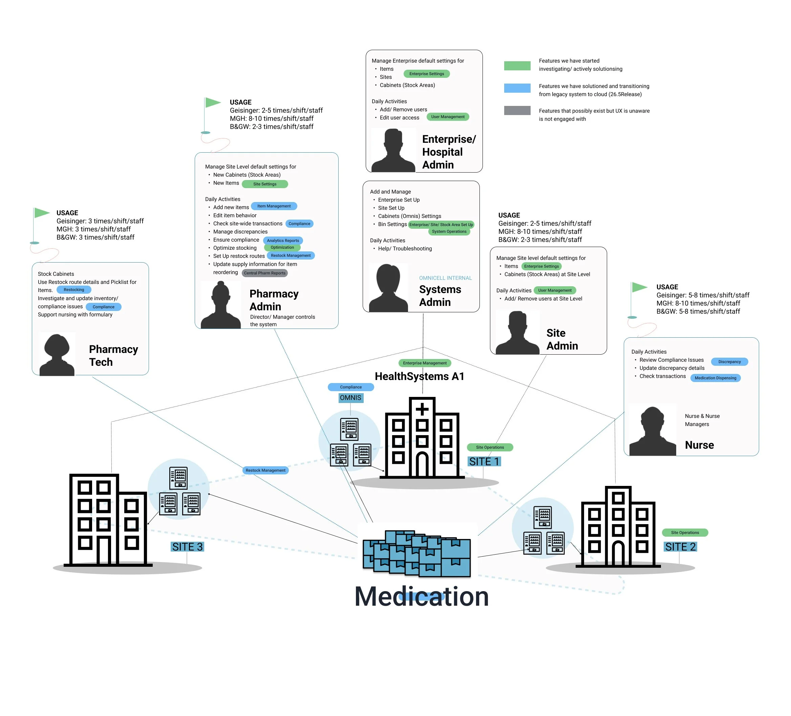
Cloud platform landscape model — aligning features, products, and devices across 22+ scrum teams.
Every item — medication and supplies — within Omnicell's medication management system was characterized by a staggering 147 distinct attributes or more, affecting how items behaved at particular locations. These attributes were organized in non-intuitive categories, causing users to struggle with findability.
To understand the real problem, we conducted ethnographic research through pharmacy shadowing — observing the daily, weekly, and standard tasks performed by pharmacists, pharmacy staff, technicians, and nurses. This gave us the task model we needed to rethink the entire attribute architecture.
I spent several days working with SMEs, reviewing every item attribute and categorizing each one based on the tasks it related to. Unused attributes were removed. Related ones were combined. The result: a task-based grouping that matched how pharmacy staff actually worked.
A 47% reduction in cognitive load — not by removing functionality, but by organizing it around how people actually work.
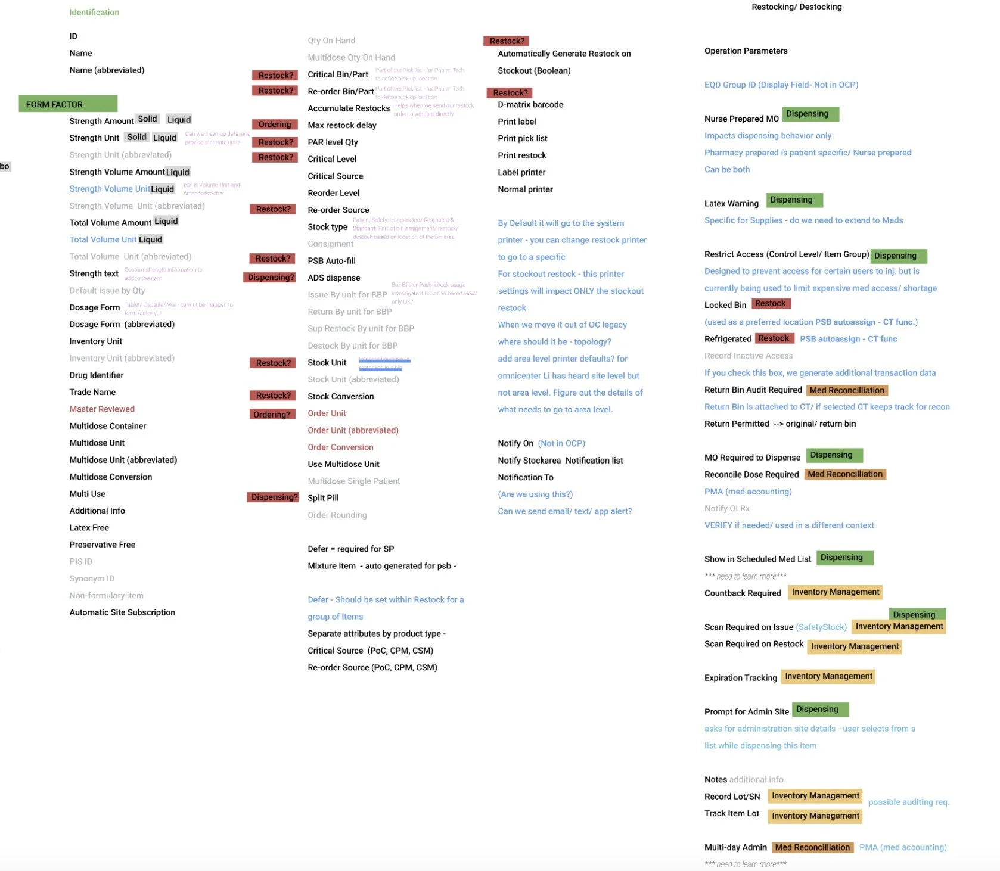
Before: 147 attributes organized in non-intuitive categories, creating severe findability problems for pharmacy staff.
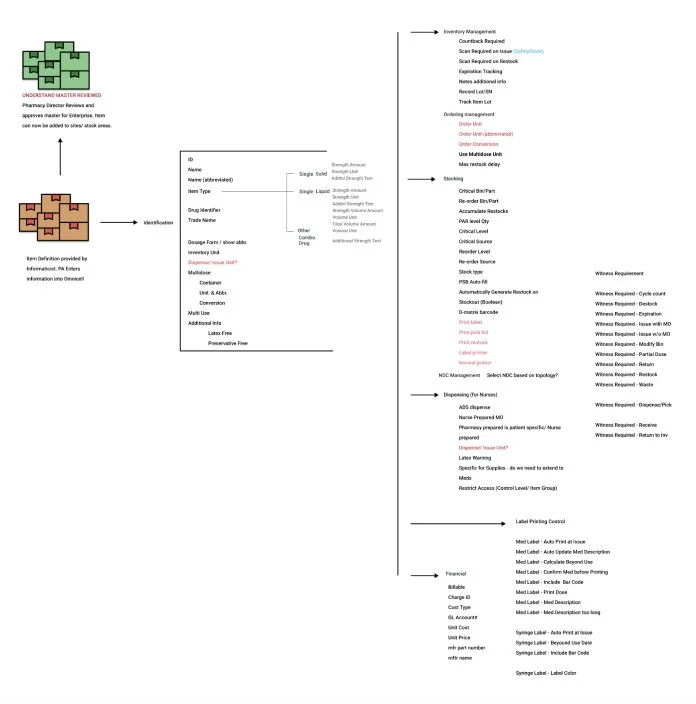
After: 78 attributes reorganized by task relationship — unused removed, related combined, grouped by how pharmacy staff actually work.
Within the medication management legacy system, users navigated three separate lists for medications and supplies: an enterprise item list, a site item list, and cabinet item lists. Though seemingly hierarchical subsets, they functioned independently — because items possessed different attributes based on location.
Each item had a standard set of attributes giving it a unique Item ID, but additional attributes dictated its behavior in various circumstances and locations. The same item appeared multiple times across lists with varying properties. For example, an item might require witness verification at the enterprise level but not at a specific location like the Emergency Room — forcing users to manage duplicates across all three lists just to understand contextual behavior.
The solution was deceptively simple: a location selector within the item attributes view, allowing seamless navigation between attribute values based on where the item was located. One view. One list. All context.
"The most effective design solutions are imperceptible."
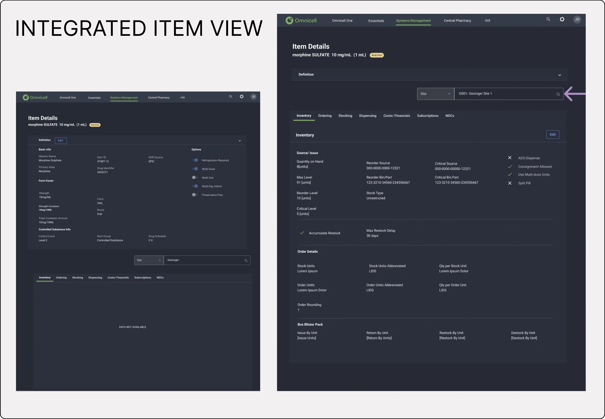
The integrated item view with location selector — eliminating three separate lists with a single contextual control.
As scope expanded, I built and inherited a team of six supporting 22+ scrum teams — covering operations, analytics, and cabinet (robot) experiences. The challenge was no longer about individual features. It was about ensuring users perceived the entire system as a unified whole rather than a disjointed collection of parts.
We applied Gestalt principles for connection and continuity, invested in ethnographic research — shadowing pharmacy admins, pharmacists, and technicians — and collaborated with Product Leaders to build a cohesive product strategy grounded in customer vision and value statements.
Key findings from shadowing shaped the roadmap: pharmacy technicians needed visual tools for medication stocking; the item edit flow involved 5–12 steps requiring simplification; inventory management needed dedicated space; and discrepancy management for controlled substances required entirely new stress-scenario workflows.
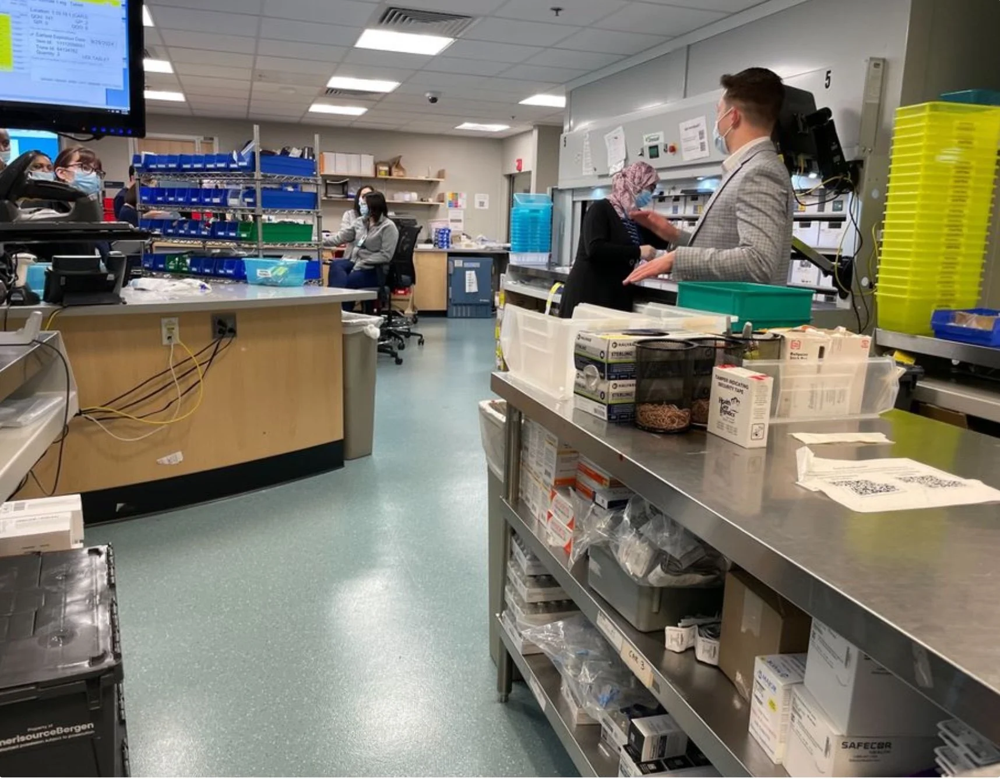
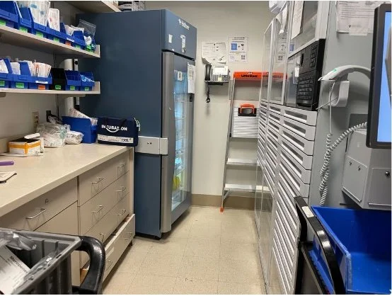
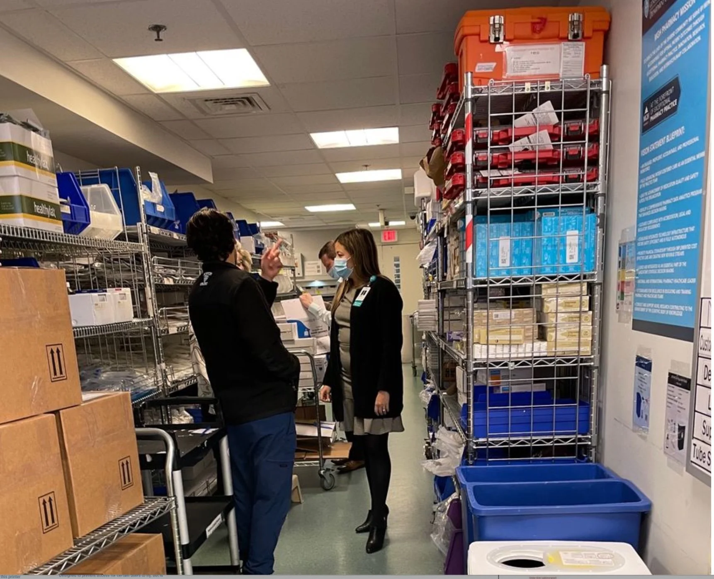
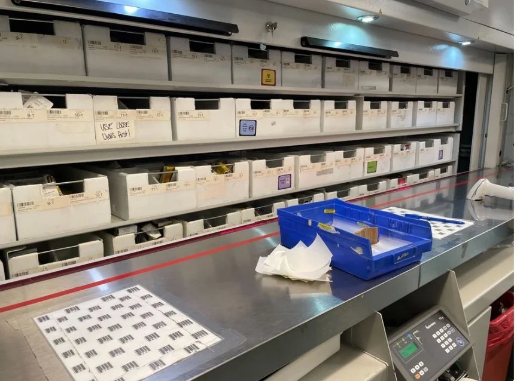
Ethnographic research — shadowing pharmacy admins, pharmacists, and technicians in the field.
"Connect the dots for our users. Do not make them think." Reduce friction between systems, roles, and workflows so the experience feels continuous.
Consistent design across all devices — including micro-interactions, table hierarchy, and standard page templates — so every touchpoint feels like one product.
Focus on adding value at each process step rather than simply reducing clicks. Outcomes, not just efficiency.
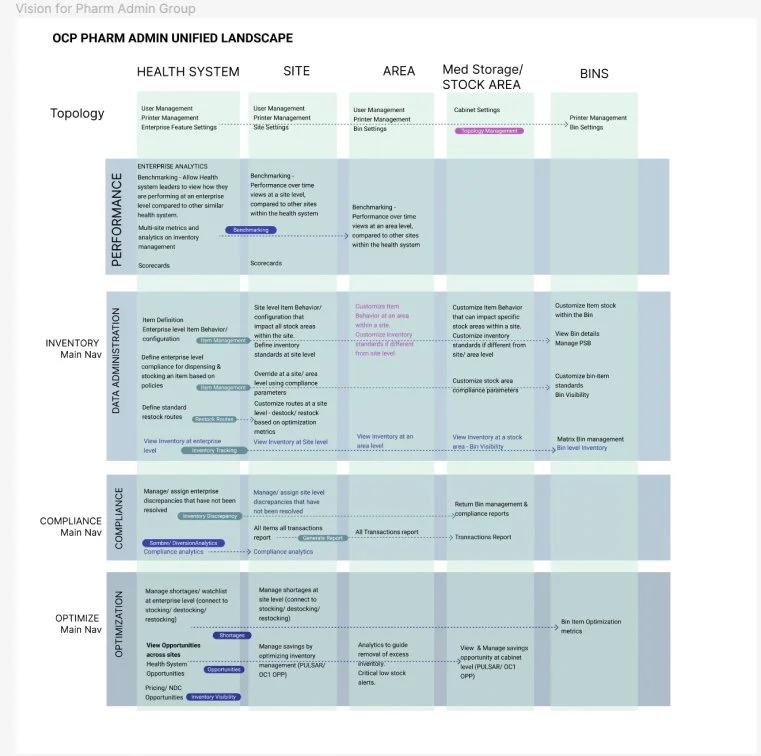
System landscape map — item and medication journey across the full autonomous pharmacy space, used to align 22+ scrum teams on language, features, and multi-modal interactions.
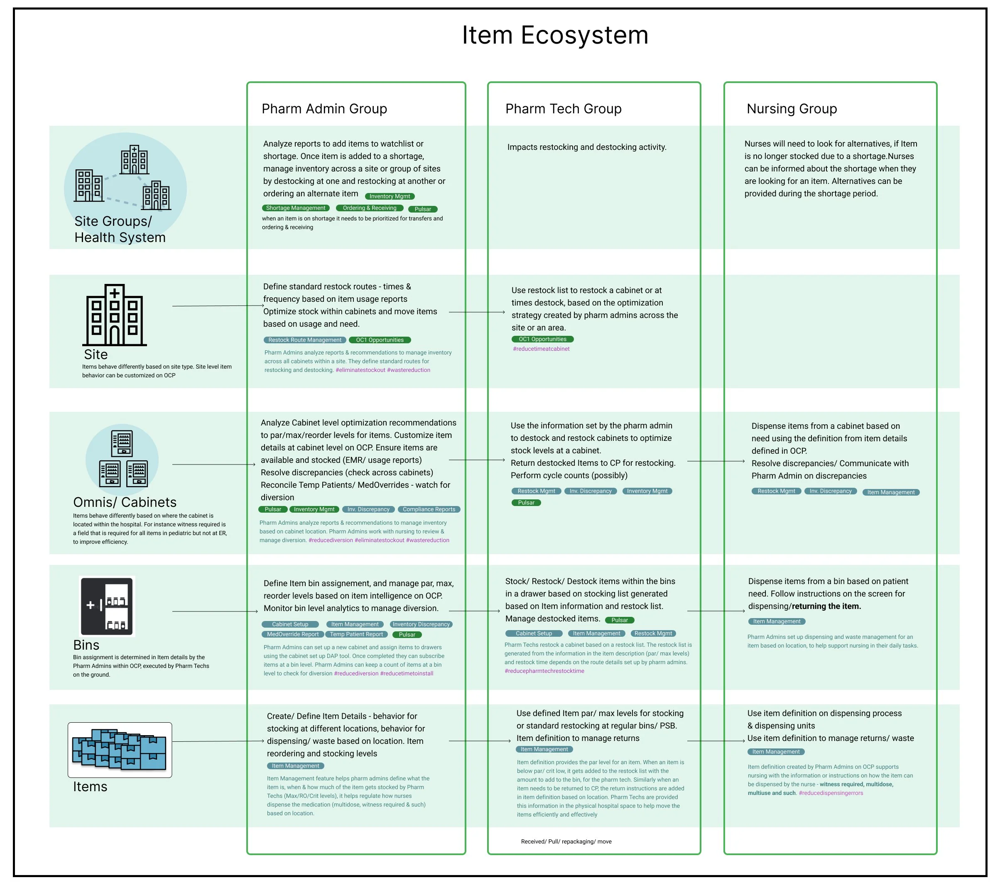
Unified experience model — standardized nomenclature, table hierarchy, and common components across all products and devices.
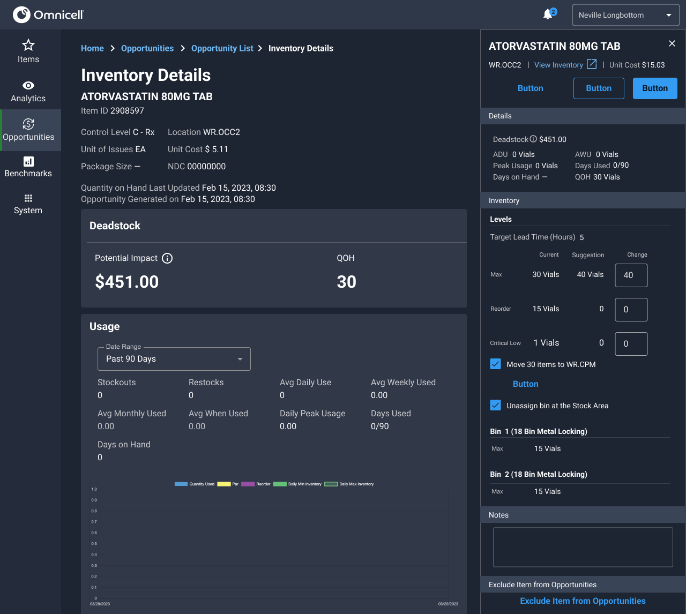
Analytics platform — inventory management with dedicated space and paid analytics features.
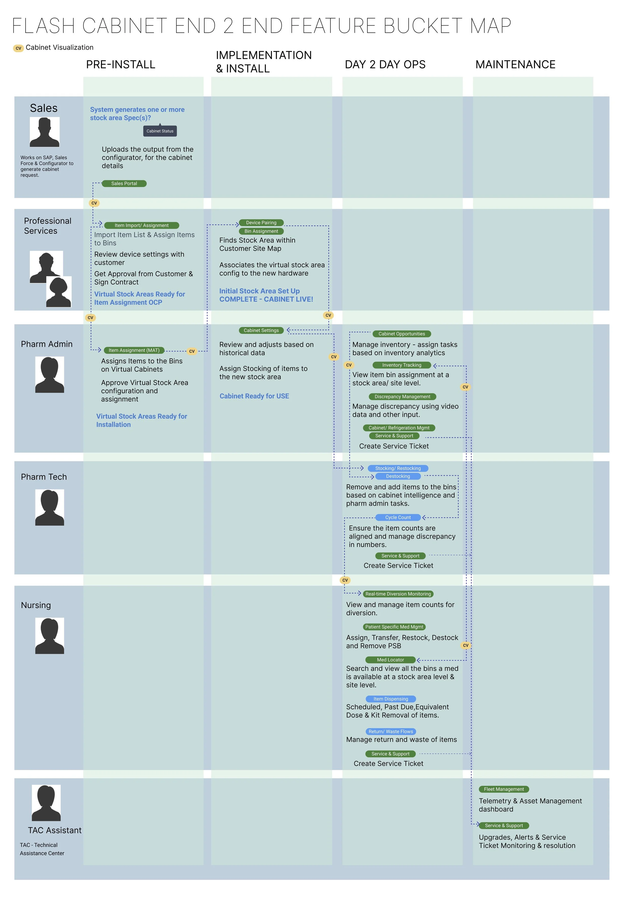
Cabinet / robot feature model — end-to-end user engagement lifecycle showing dependencies, visualization views, and research needs across Omnicell's hardware ecosystem.
"The efforts to unify teams, align underlying services, and ensure consistent deliverables across all departments led to significant improvements in user experience and operational efficiency."